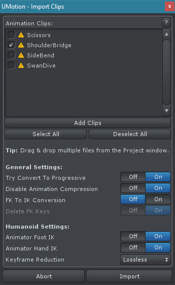
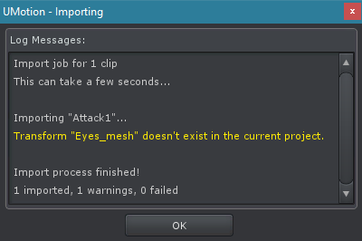

Import / Export
Exporting
UMotion can export animation clips in Unity's proprietary *.anim file format or as *.fbx files. Before exporting animation clips, the exporter needs to be configured (see Export Settings).
Important: If you have problems with your exported animations, take a look at the Exporting Animations FAQ.
| Feature | *.anim | *.fbx |
|---|---|---|
| Bone/Transform Animations | Yes | Yes |
| Animation Events | Yes | Yes - Stored in Unity's asset import settings. |
| Custom Animator Curves(Custom Property - Animator Parameter) | Yes | Yes - Stored in Unity's asset import settings. |
| Curves for any Component Properties(e.g. Blend Shapes, Light Intensity,...) | Yes | No |
| Supported by 3rd Parties | No | Yes |
| Supports Animation Compression | No | Yes |
| Supports Quaternions | Yes | All curves are resampled to euler curves. |
| Supported Framerates | Any | 120, 100, 96, 72, 60, 50, 48, 30, 24 |
| Requires UMotion Pro | No | Yes |
| Supported Operating System | Windows, Mac OS, Linux | Windows, Mac OS |
In most cases exporting to *.fbx is the preferred choice. Please note that the *.fbx file format internally uses euler angles instead of quaternions. This can introduce Gimbal Lock in the exported animation clip even if in UMotion quaternion curves have been used.
UMotion offers two ways to export the animation clips of the current UMotion project:
- By clicking on File ➔ Export All Clips all clips of the opened UMotion project are exported.
- By clicking on File ➔ Export Current Clip only the current opened clip is exported (faster).
Importing Professional
By clicking on File ➔ Import Clips the Import Clips Dialog is opened. It can be used to import existing animations into the current UMotion project.
The yellow warning icon next to the animation clip indicates that the importer has detected a minor issue. Move the mouse over the list entry. The appearing tooltip will provide the full warning message.
Tip: To add multiple files to the Import Clips Dialog, select the files in Unity's Project Window and drag & drop them into the list view.
Import Clips Dialog
| UI Element | Description |
|---|---|
| Add Clips | Adds animation clips to the import list. It's possible to select *.anim files, UMotion project files or any 3D model file format supported by Unity. If one of the latter 2 was selected, all animation clips found in that file will be added to the import list. |
| Select All | Selects all clips in the import list. |
| Deselect All | Deselects all clips in the import list. |
| Try Convert To Progressive | When enabled, all rotation properties are converted to Progressive Quaternion Rotation if possible without any loss in quality. |
| Disable Animation Compression | Sets the model import setting "Animation Compression" to "None" for clips that are imported from a 3D file format. This ensures that the clips are imported at highest quality. The original setting is restored after the import process has finished. This setting is enabled by default for new created UMotion projects of type humanoid. It is disabled for generic and legacy generic projects. |
| FK to IK Conversion | Automatically converts the imported clip to IK. Only available if IK chains are configured in this project. More information: FK to IK Conversion |
| Delete FK Keys | When enabled, FK keys that have been converted to IK will be deleted. |
| Animator Foot IK | Only available when the current project is of type Humanoid. When enabled, the Animator's (Unity Mecanim) Inverse Kinematics for Humanoid Feet is applied when importing. This ensures that the feet reach their original position which could not be the case when retargeting an animation to a character with different proportioned legs. More information: Unity Blog - Humanoids (see Original hands and feet position) |
| Animator Hand IK | Only available when the current project is of type Humanoid. When enabled, the Animator's (Unity Mecanim) Inverse Kinematics for Humanoid Hands is applied when importing. This ensures that hands reach their original rotation which could not be the case when retargeting an animation to a character with different proportioned arms. More information: Unity Blog - Humanoids (see Original hands and feet position) |
| Keyframe Reduction | The keyframe reduction automatically removed redundant keys (= keys with equal values) from imported humanoid animation clips. This reduction can be set to "Lossy" or to "Lossless" (default). "Lossy", as the name implies, removes more keys but can produce visible jitter (usually noticeable on hands and feet). |
| Abort | Closes the import dialog window without importing any animation clip. |
| Import | Imports all animation clips selected in the list. |
While importing a dialog window displays log messages regarding the ongoing import process. White messages are information, yellow are warnings and red are errors. Don't close this window before the import process has finished.
Importing Dialog
External Clip Import
It is possible to import any animation clip that was created in an external application as long as the 3D file format is compatible with Unity. It is also possible to import animations in Unity's proprietary file format *.anim.
The following table provides an overview of the import compatibility depending on the animation rig type. When importing an UMotion project, this table does not apply.
| Importing Legacy | Importing Generic | Importing Humanoid | |
|---|---|---|---|
| Legacy Project | Yes | Yes | No |
| Generic Project | Yes | Yes | No |
| Humanoid Project | Yes | Yes | Yes |
UMotion Project Import
It is possible to import animation clips of other UMotion project files into the current project. It is even possible to e.g. import an animation clip of a humanoid project into a generic project or vice versa (see below).
In order for the UMotion project import to work correctly, the rig configurations need to be identical. This means that the rigs of the characters need to match and that the custom created joints/transforms and all constraints need to be configured in the same way.
Conversion between humanoid/generic
It is possible to convert between humanoid and generic as it is possible to import a humanoid project into a generic project and vice versa.
Example Workflow
In this example an UMotion project that contains animations for a character of type generic should be converted to humanoid:
- Duplicate the model of the character in Unity's project explorer.
- Select the duplicated model and in the Inspector, set the animation type to humanoid.
- Drag the duplicated model into the Scene View to create a new instance of it.
- Create a new UMotion project of type humanoid and assign the duplicated model to the Pose Editor.
- In the Clip Editor click on "File --> Import Clips".
- Click on "Add Clips" and select the UMotion project file that should be converted.
- Click on "Import".
- And that's it. Once the new imported clips are exported they can be used for all your characters as they are now of type humanoid.